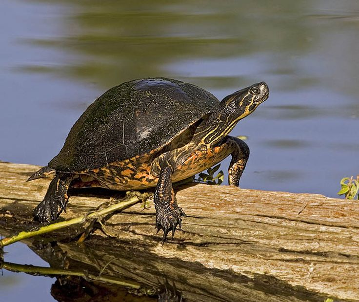
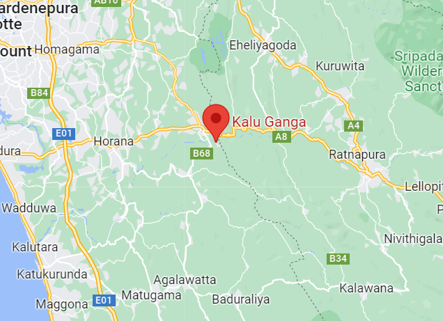
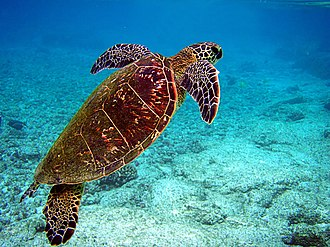
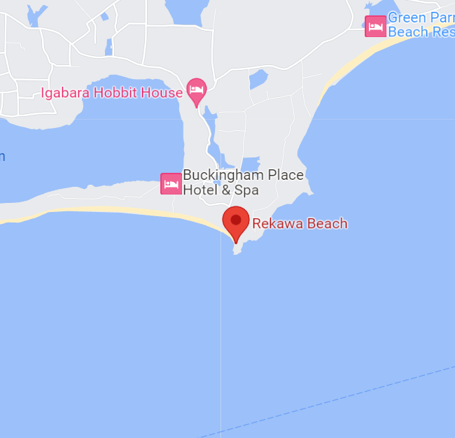
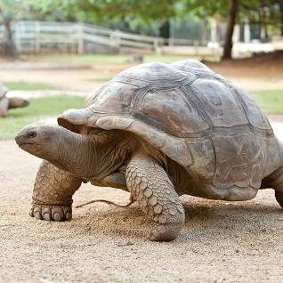
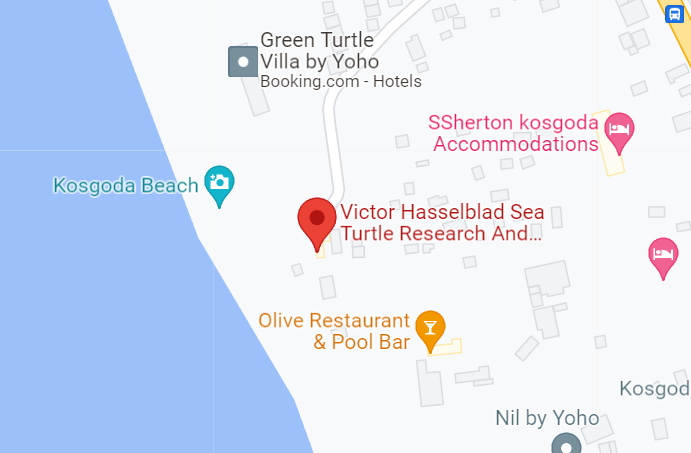

Terrapins


Terrapins are one of several small species of turtle (order Testudines) living in fresh or brackish water.
Terrapins do not form a taxonomic unit and may not be closely related. Many belong to the families Geoemydidae
and Emydidae.
The name "terrapin" is derived from torope, a word in an Algonquian language that referred to the
species Malaclemys terrapin (the Diamondback terrapin). It appears that the term became part of common
usage during the colonial era of North America and was carried back to Great Britain. Since then,
it has been used in common names for testudines in the English language.
Marine Turtles


Sea turtles (superfamily Chelonioidea), sometimes called marine turtles,
are reptiles of the order Testudines and of the suborder Cryptodira.
The seven existing species of sea turtles are the flatback, green, hawksbill, leatherback,
loggerhead, Kemp's ridley, and olive ridley sea turtles. Five of the seven species listed above,
are present in Srilankan waters, and are listed as endangered and/or threatened
under the Endangered Species Act. Sea turtles can be categorized as hard-shelled (cheloniid) or
leathery-shelled (dermochelyid). The only dermochelyid species of sea turtle is the leatherback.
Land Tortuises


Tortoises are reptiles of the family Testudinidae of the
order Testudines (Latin: tortoise). Like other turtles,
tortoises have a shell to protect from predation and other threats.
The shell in tortoises is generally hard, and like other members of the suborder Cryptodira,
they retract their necks and heads directly backward into the shell to protect them.
Tortoises are the longest-living land animals in the world,
although the longest-living species of tortoise is a matter of debate.
Galápagos tortoises are noted to live over 150 years,
but an Aldabra giant tortoise named Adwaita may have lived an
estimated 255 years. In general, most tortoise species can live 80–150 years.
| Species |
Conservation status |
Habitat |
Category |
| Malayan Box Turtle |
Vulnerable species due to habitat loss. |
Streams, rivers, swamps, and rice paddies. |
Terrapin |
| Loggerhead turtle |
Vulnerable due to threats such as habitat loss, fishing gear entanglement,
coastal development, and pollution. |
Coral reefs, and open ocean areas. |
Marine |
| Indian Star Tortoise |
Vulnerable due to habitat loss,
collection for the pet trade, and illegal wildlife trafficking. |
Arid and semi-arid regions, including grasslands, scrublands,
and dry forests. |
Land tortuise |
| Hawksbill Sea Turtle |
Critically endangered due to factors such as habitat degradation,
poaching for their shells, and accidental capture in fishing gear. |
Coral reefs, rocky areas, and coastal waters with rich food sources. |
Marine |
| FACT:There is so far only ONE tortoise species in Srilanka. |